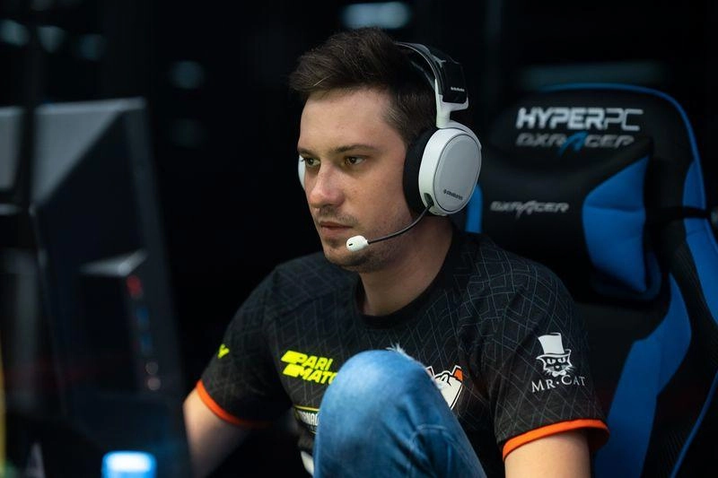

The Origin

June 2013. Russian pro Alexei "Solo" Berezin looks at the live betting odds for his own match, sees 3.22, and decides to bet against himself for $100. His team loses. He wins $322. It should have been a forgettable footnote, a cheap side bet nobody would remember. Instead, that exact number became Dota 2's permanent inside joke and its ugliest shorthand: type "322" in any Dota chat today and everyone instantly knows you mean "this match is fixed."
South American Context
Low salaries, unstable contracts, and a lack of institutional support have made South American players especially vulnerable to match-fixing offers. Former Elite Wolves player Freddy "SmAsH" Sina has said that at his peak he earned around $90 a month, a quarter of the average Peruvian wage at the time, and still couldn't always cover basic meals. That kind of gap between a pro salary and daily costs is part of why third-party bettors keep targeting the region's younger, tier-3 talent.